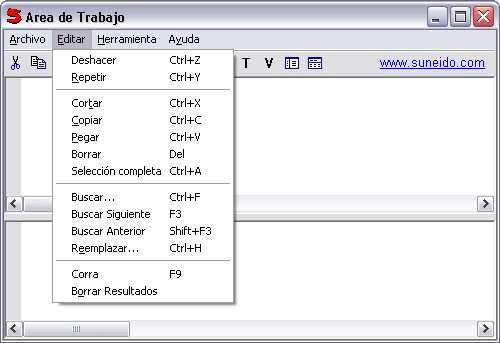
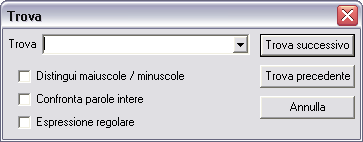
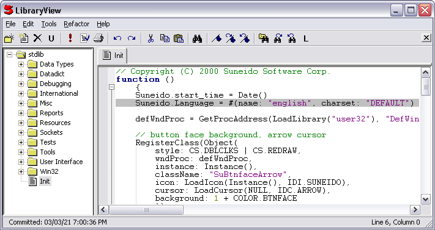
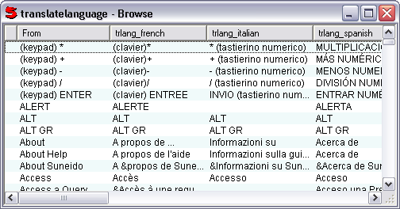

Since the July 12, 2001 release, Suneido has had support for language translation in the user interface. The implementation is based on contributions from Roberto Artigas Jr. who also contributed the first translation data for Spanish. Since then we have added Italian (thanks to Valerio Muzi), French (thanks to Jennie Hill and Jean-Luc Chervais), Russian (thanks to DeusTech), German (thanks to Stefan Schmiedl), Czech (thanks to Tomas Polak), Norwegian (thanks to Arne Christian Riis), Dutch (thanks to Cor de Jong and Jos Schaars), Vietnamese (thanks to Kim Dong), Hungarian (thanks to Mark Gabor), Portugese (thanks to Mateus Vendramini), and Bulgarian (thanks to Mal Malakov).
Most user interface elements are translated, including: buttons, checkboxes, context menus, group boxes, menus, static text, status bar, tooltips, and window and dialog titles. The translation data that we have so far is aimed at translating the development environment (IDE), although the mechanism is usable for applications as well.
Note:
For example, here is the WorkSpace in Spanish:

and the Find dialog in Italian:

The translation is controlled by the "Language" member of the global "Suneido" object (i.e. Suneido.Language). This is initially set to English (i.e. no translation) in Init (in stdlib). You can set it from the WorkSpace by running, for example:
Suneido.Language = #(name: "spanish", charset: "DEFAULT")
or:
Suneido.Language = #(name: "russian", charset: "CYRILLIC")
charset must be one of the names in CHARSET (stdlib Win32 > Gdi32 > Defines).
This will not change any existing windows, but from then on, any new windows (or dialogs) should be translated.
You can switch back to English from the WorkSpace by running:
Suneido.Language = #(name: "english", charset: "DEFAULT")
If you want to change the default language for your database, modify Init in stdlib (using Library View) to set the appropriate language. Next time you start Suneido it should default to the appropriate language.

To edit the translation data, use Browse a Query from the IDE menu (the table name is translatelanguage):
You should see something like:

Double click or press F2 to edit a field and TAB to move to the next field. Use the INSERT and DELETE keys to insert and delete records. You can drag the headings to rearrange the columns.
Note: Currently, Browse does not save any of your changes until you close the Browse window. If you are doing extensive editing, you should probably close and re-open the browse occasionally to ensure your work is saved. Otherwise, if you crash for any reason, you'll lose your changes.
To add a new language, for example Swedish, close the Browse if it's open, and from QueryView run:
alter translatelanguage create (trlang_swedish)
When translating, a trailing "..." is removed before lookup, and added back to the translation. There shouldn't be any "..." in the translationlanguage table. Also, if the string contains any ampersands (&), then they are removed before the lookup. After the lookup if the original string did not contain "&" then they will be removed from the translation. This means that the English entries should not contain "&", but the translations should where applicable (if used on a menu).
To contribute minor changes of a few records, just list the changes in an email. For larger changes (e.g. a new language) please dump the updated translatelanguage table from the command line:
suneido -dump translatelanguage
and send translatelanguage.su to us at info@suneido.com.
Note: Please make sure you start with the most recent version of translatelanguage to minimize any merging problems.
If you want to incorporate translation into your own code, the main interface is the TranslateLanguage function. It takes a single argument, the word or phrase to be translated, and returns the translation, or the original string if no translation is found. For example:
title = TranslateLanguage(title)
TranslateLanguage calls GetLanguage() to get the current language. GetLanguage currently just returns the value of Suneido.Language. TranslateLanguage handles "..." and ampersands (&) as described above.